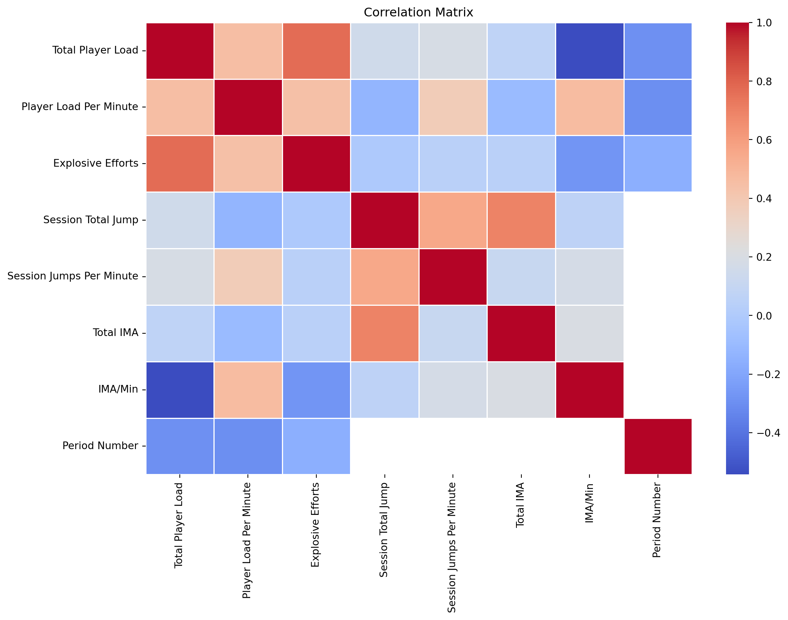
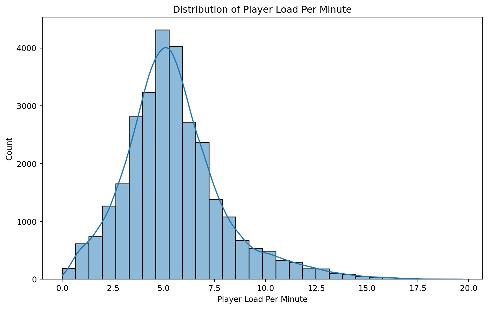
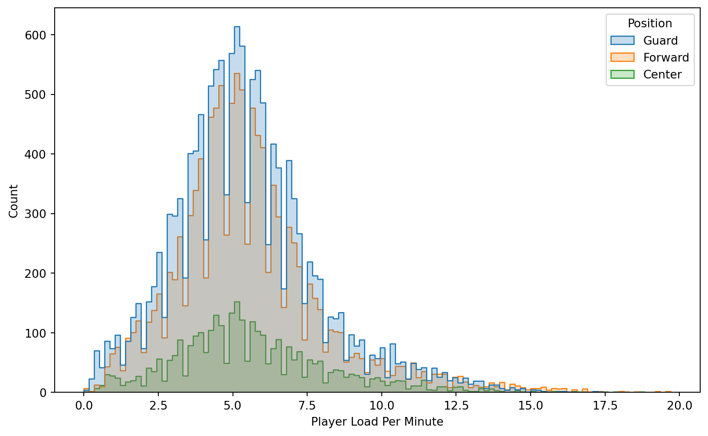
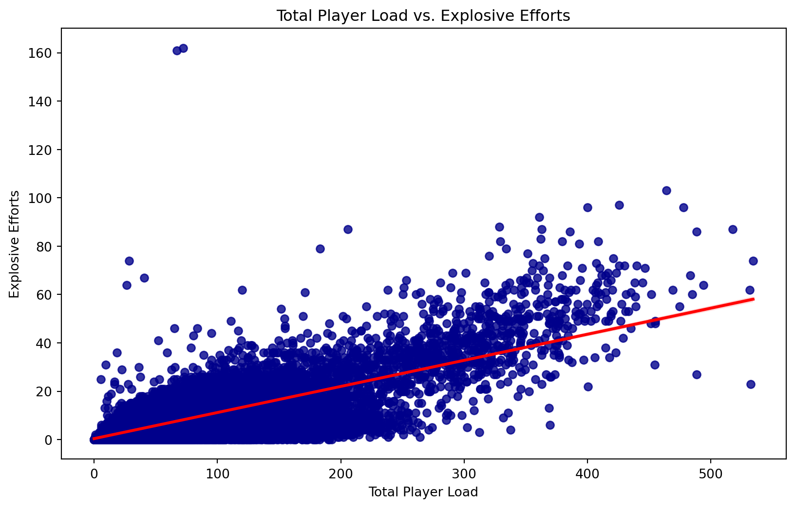
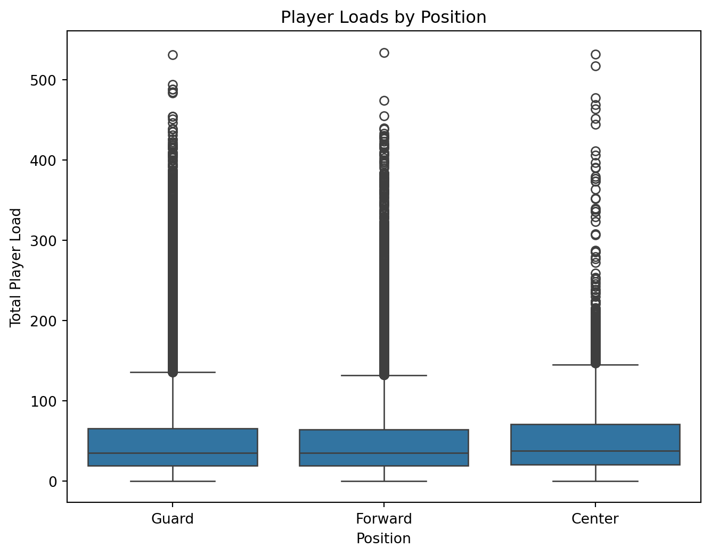
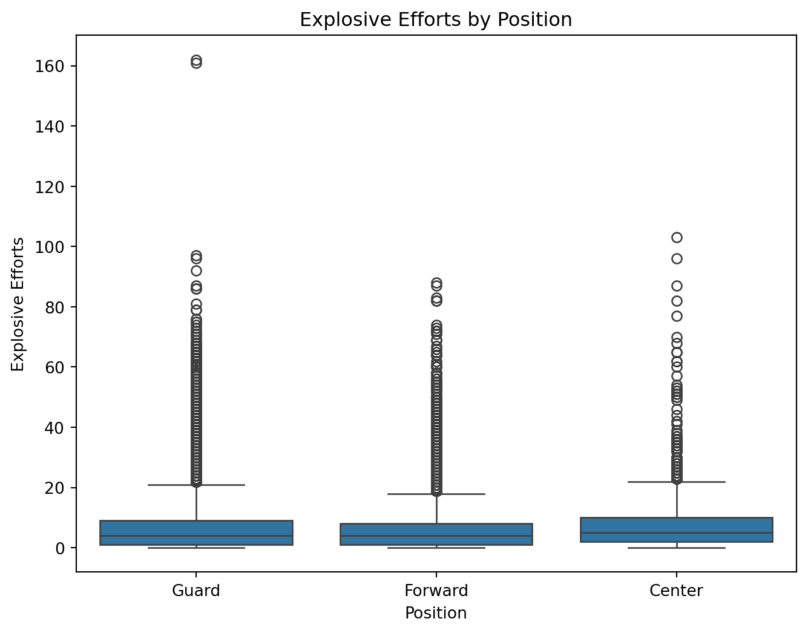
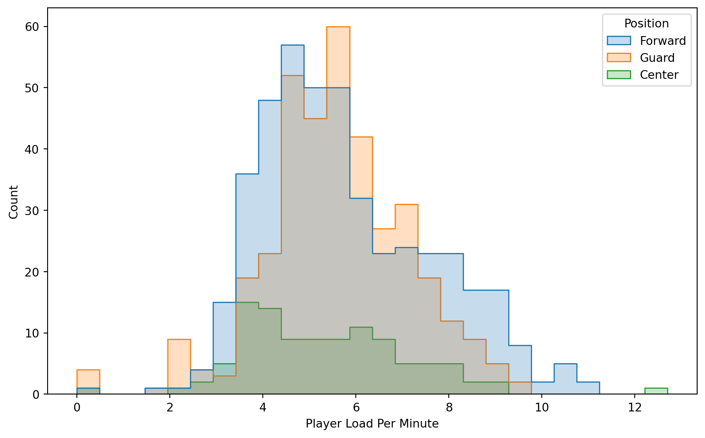
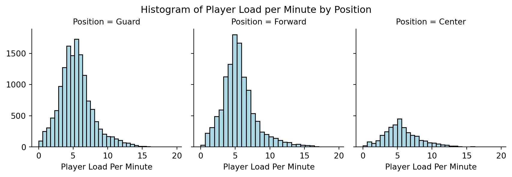

# import libraries
import pandas as pd
import matplotlib.pyplot as plt
import seaborn as sns
import numpy as np
import scipy as sp
from datalearning import df Number of duplicates: 0Total Player Load: Total physical effort during a session. This is important for our analysis to see how much work the athlete is doing overall.Player Load Per Minute: Effort per minute (intensity). This is important for our analysis to see the intensity/effort players are putting in. Higher pl per minute means they are most likely sprinting/exerting lots of energy which may take longer recovery.Explosive Efforts: Number of high-intensity movements. This is important because high intensity movements can cause strain on muscles leading to potential injuries.Session Total Jump: Total jumps in a session. This is important because positions that jump a lot may need more recovery due to the strain this puts on tendons. Especially since jumps are very frequent in basketball.Session Jumps Per Minute: Jumps per minute (jump intensity). This can identify positions that may be at risk for knee injury if they have a very high rate of jumps per minutes.Total IMA: Total number of movements (all intensities). This is important to analyze all movement and not just high intensity movement.IMA/Min: Number of movements per minute. This is important to track endurance by position.Position: This is important for our analysis to compare all of our variables against position.# import libraries
import pandas as pd
import matplotlib.pyplot as plt
import seaborn as sns
import numpy as np
import scipy as sp
from datalearning import df Number of duplicates: 0#Generate summary statistics (mean, median, standard deviation, min/max, quartiles) for numerical variables
numeric = df.select_dtypes(include=[np.number])
numeric = numeric.dropna() # Drop any rows with missing values
# Create a new dataframe to store summary statistics
summary = pd.DataFrame()
# Calculate summary statistics for each numeric column and add to the dataframe
for each in numeric.columns:
stats = numeric[each].describe()
summary[each] = stats
print(summary) Total Player Load Player Load Per Minute Explosive Efforts \
count 911.000000 911.000000 911.000000
mean 148.872053 5.655873 10.508233
std 86.035006 1.713292 15.071248
min 0.000000 0.000000 0.000000
25% 102.256000 4.400000 2.000000
50% 143.542000 5.400000 6.000000
75% 190.236500 6.800000 11.000000
max 534.156000 12.700000 103.000000
Session Total Jump Session Jumps Per Minute Total IMA IMA/Min
count 911.000000 911.000000 911.000000 911.000000
mean 114.470911 1.386937 824.243688 47.205060
std 50.033823 0.568696 317.066287 52.545666
min 0.000000 0.000000 0.000000 0.000000
25% 79.500000 0.970000 621.000000 21.085000
50% 108.000000 1.320000 862.000000 31.370000
75% 141.500000 1.750000 1034.500000 42.675000
max 329.000000 4.750000 1857.000000 310.430000 #Create visualizations such as histograms, boxplots, or density plots to explore the distribution of key numerical variables.
numeric_df = df.select_dtypes(include=['number'])
# Create correlation matrix
plt.figure(figsize=(12, 8))
corr = numeric_df.corr()
sns.heatmap(corr, cmap='coolwarm', annot=False, linewidths=0.5)
plt.title('Correlation Matrix')
plt.show()
plt.figure(figsize=(10, 6))
#Plotting distribution of Player Load Per Minute
sns.histplot(df['Player Load Per Minute'], bins=30, kde=True)
plt.title('Distribution of Player Load Per Minute')
plt.show()
plt.figure(figsize=(10, 6))
# correlation with player load and position
sns.histplot(df, x="Player Load Per Minute", hue="Position", element="step", common_norm=False)
plt.show()


Interpret findings: what variables appear related?
#Create regression plots to visualize relationships between total player load and explosive efforts
plt.figure(figsize=(10, 6))
sns.regplot(x='Total Player Load', y='Explosive Efforts', data=df, scatter_kws={'color': 'darkblue'}, line_kws={'color': 'red'})
plt.title('Total Player Load vs. Explosive Efforts')Text(0.5, 1.0, 'Total Player Load vs. Explosive Efforts')
Dig into potential causal or descriptive relationships
#Create plots between positions and other key variables
#Boxplots
plt.figure(figsize=(8,6))
sns.boxplot(x="Position", y="Total Player Load", data=df)
plt.title("Player Loads by Position")
plt.show()
plt.figure(figsize=(8,6))
sns.boxplot(x="Position", y="Explosive Efforts", data=df)
plt.title("Explosive Efforts by Position")
plt.show()
#Histograms
plot = sns.FacetGrid(df, col="Position", col_wrap=3, sharex=True, sharey=True)
plot.map(plt.hist, "Total Player Load", bins=30, color="lightblue", edgecolor="black")
plot.fig.suptitle("Histogram of Total Player Load by Position", y=1.02)
plt.show()
plot = sns.FacetGrid(df, col="Position", col_wrap=3, sharex=True, sharey=True)
plot.map(plt.hist, "Player Load Per Minute", bins=30, color="lightblue", edgecolor="black")
plot.fig.suptitle("Histogram of Player Load per Minute by Position", y=1.02)
plt.show()


